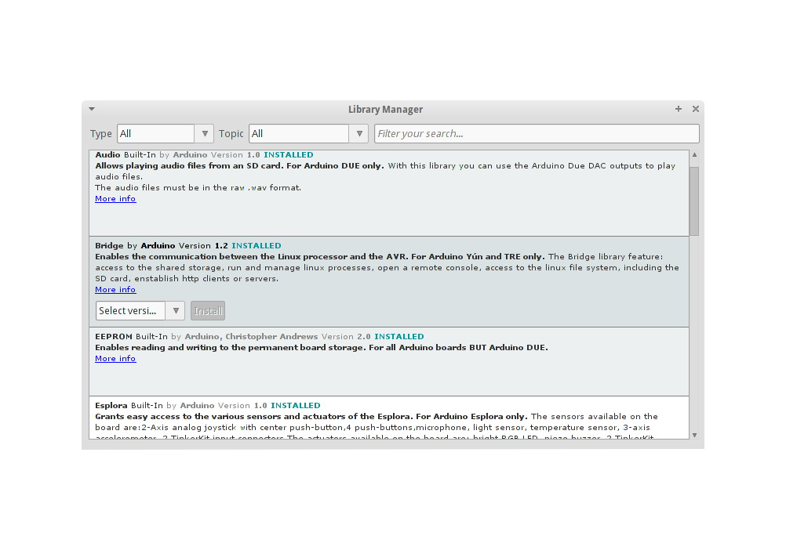
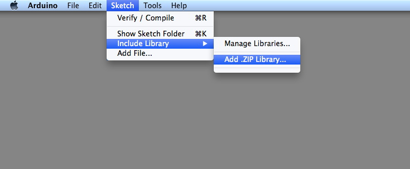
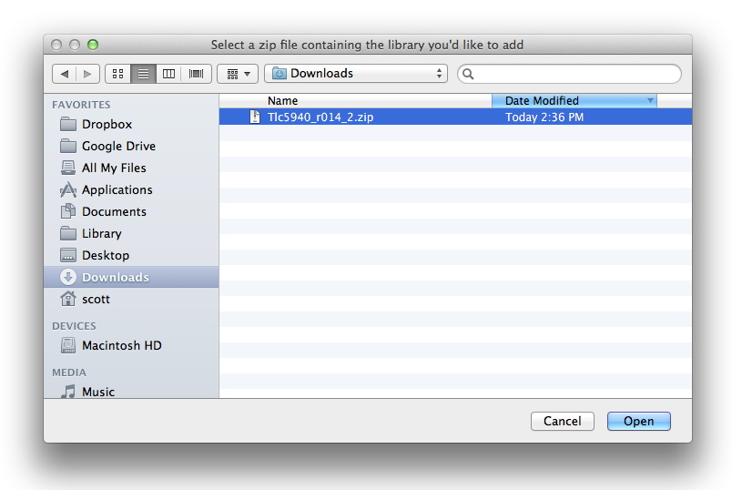
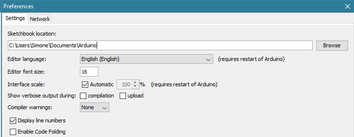
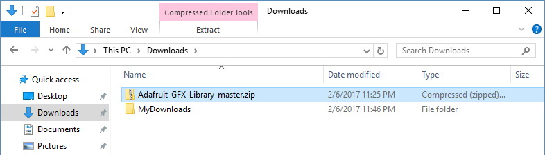
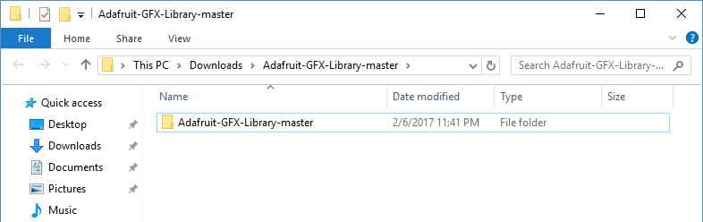
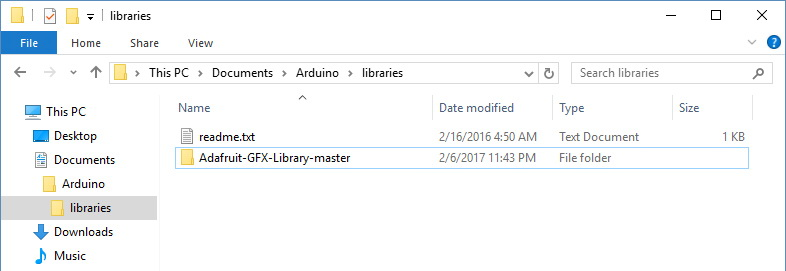
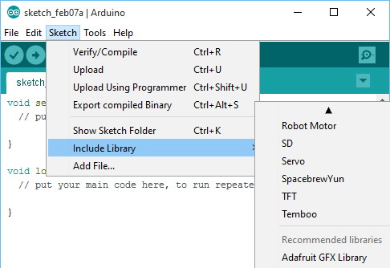

www.osoyoo.com
Back to NodeMCU Tutoial Index Page
Install an additional Arduino libraries
Instruction
Once you are comfortable with the Arduino software and using the built-in functions, you may want to extend the ability of your Arduino with additional libraries.
What are Libraries?
Libraries are a collection of code that makes it easy for you to connect to a sensor, display, module, etc. For example, the built-in LiquidCrystal library makes it easy to talk to character LCD displays. There are hundreds of additional libraries available on the Internet for download. The built-in libraries and some of these additional libraries are listed in the reference. To use the additional libraries, you will need to install them.
How to Install a Library
Using the Library Manager
To install a new library into your Arduino IDE you can use the Library Manager (available from IDE version 1.6.2). Open the IDE and click to the "Sketch" menu and then Include Library > Manage Libraries.
Then the library manager will open and you will find a list of libraries that are already installed or ready for installation. In this example we will install the Bridge library. Scroll the list to find it, then select the version of the library you want to install. Sometimes only one version of the library is available. If the version selection menu does not appear, don't worry: it is normal.
Finally click on install and wait for the IDE to install the new library. Downloading may take time depending on your connection speed. Once it has finished, an Installed tag should appear next to the Bridge library. You can close the library manager.

You can now find the new library available in the Include Library menu. If you want to add your own library open a new issue on github.
Importing a .zip Library
Libraries are often distributed as a ZIP file or folder. The name of the folder is the name of the library. Inside the folder will be a .cpp file, a .h file and often a keywords.txt file, examples folder, and other files required by the library. Starting with version 1.0.5, you can install 3rd party libraries in the IDE. Do not unzip the downloaded library, leave it as is.
In the Arduino IDE, navigate to Sketch > Include Library. At the top of the drop down list, select the option to "Add .ZIP Library''.

You will be prompted to select the library you would like to add. Navigate to the .zip file's location and open it.

Return to the Sketch > Import Library menu. You should now see the library at the bottom of the drop-down menu. It is ready to be used in your sketch. The zip file will have been expanded in the libraries folder in your Arduino sketches directory.
NB: the Library will be available to use in sketches, but examples for the library will not be exposed in the File > Examplesuntil after the IDE has restarted.
Manual installation
When you want to add a library manually, you need to download it as a ZIP file, expand it and put in the proper directory. The ZIP file contains all you need, including usage examples if the author has provided them. The library manager is designed to install this ZIP file automatically as explained in the former chapter, but there are cases where you may want to perform the installation process manually and put the library in the libraries folder of your sketchbook by yourself.
Arduino libraries are managed in three different places: inside the IDE installation folder, inside the core folder and in the libraries folder inside your sketchbook. The location of your sketchbook defaults to “..\\DOCUMENTS\Arduino” on Windows machines. The path is clearly shown in the Preferences panel. If you want to see where the sketchbook defaults open Preferences under File.

Go to the directory where you have downloaded the ZIP file of the library

Extract the ZIP file with all its folder structure in a temporary folder, then select the main folder, that should have the library name

Copy it in the “libraries” folder inside your sketchbook.

Start the Arduino Software (IDE), goto Sketch and the Include Library. Verify that the library you just added is available in the list, after the core libs.

Please note: the way libraries are chosen during compilation is designed to allow the update of libraries present in the distribution. This means that placing a library in the “libraries” folder in your sketchbook overrides the other libraries versions.
The same happens for the libraries present in additional cores installations. It is also important to note that the version of the library you put in your sketchbook may be lower than the one in the distribution or core folders, nevertheless it will be the one used during compilation. When you select a specific core for your board, the libraries present in the core’s folder are used instead of the same libraries present in the IDE distribution folder.
Last, but not least important is the way the Arduino Software (IDE) upgrades itself: all the files in Programs/Arduino (or the folder where you installed the IDE) are deleted and a new folder is created with fresh content.
This is why we assume that your libraries are properly put in your sketchbook folder and therefore they are not deleted during the Arduino Software (IDE) update process.
This tutorial based on text by Limor Fried.
Last revision 2017/02/07 by SMThe text of the Arduino getting started guide is licensed under a Creative Commons Attribution-ShareAlike 3.0 License. Code samples in the guide are released into the public domain.This paper is from https://www.arduino.cc/en/Guide/Libraries,more info please click www.arduino.cc